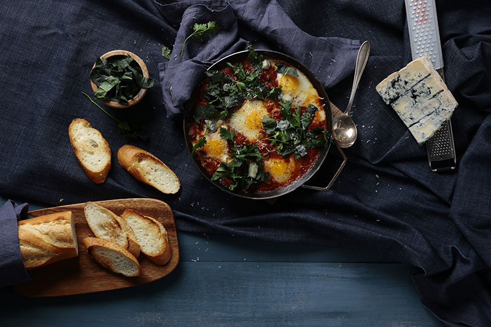

별거 없지만 있어 보이는 푸드 스타일링 따라 하기.
/
에그인헬
/
에그인헬
-
에그인헬,
어쩌면 생소한 이름일지도 모르겠습니다.
한동안 인스타를 휩쓴 요리지만 말이죠.
에그인헬 은 이스라엘 가정식 요리로 '샥슈카(Shakshuka)'라고 합니다.
하지만, 에그인헬이라고 불리는 이유는
빨간 토마토소스에 달걀이 빠져있어 그런 별명이 붙었다고 합니다.
이번엔 에그인헬을 예쁘게 만드는 팁과 분위기 있게 스타일링 하는 법을 알려드리려고 합니다.
-
Recipe
- 재료 손질하기
- 중불로 달군 팬에 베이컨을 볶아줍니다.
- 어느 정도 볶은 베이컨에 마늘을 넣고 볶다가 다진 양파도 넣어 줍니다.
- 어느 정도 볶았으면 토마토소스를 넣고 끓여줍니다.
- 토마토소스가 약간 끓으면 물이나 우유를 넣어 농도를 맞춰줍니다.
- 토마토소스에 달걀이 들어갈 자리를 파 준 후 깨뜨린 달걀을 넣습니다.
- 약불에서 달걀이 익도록 기다려 줍니다.
- 달걀이 어느 정도 익으면 불에서 내리고 치즈를 뿌려줍니다.
- 달걀 위에 후추도 약간 뿌려주고, 시금치와 파슬리도 올리면 완성입니다.
재료
달걀 4개, 양파 1/2개, 베이컨 3줄, 마늘 3쪽, 시금치 한 줌, 토마토소스 1컵 반,
물이나 우유 100ml, 후추 약간, 파마산 치즈 한 줌, 바게트 한 개, 이태리 파슬리
마늘은 얇게 슬라이스해두고, 양파는 다져줍니다.
베이컨도 먹기 좋은 크기로 썰어주고, 시금치도 깨끗이 씻어 1.5cm 두께로 잘라둡니다.
바게트는 취향에 따라 팬에 구워둡니다.
팬은 20cm 정도 떨어져 손을 대봤을 때 따뜻하다 싶을 정도입니다.
※ 볶다가 베이컨 기름이 튈 수 있으니 주의하시기 바랍니다.
베이컨에서 나온 기름으로 나머지 재료들을 볶아줄 것입니다.
마늘이 약간 노릇해질 즈음에 양파를 넣어 주면 됩니다.
베이컨이 너무 바삭해지지 않도록 주의합니다.
혹시나 눌러 붙지 않게 잘 저어가며 끓여주어야 합니다.
달걀을 익혀야 하기 때문에 파스타를 만들 때의 토마토소스보다 약간 묽어야 합니다.
예쁜 에그 인 헬을 만들기 위한 가장 중요한 부분입니다.
달걀이 들어가면 예쁠 위치를 잡아주세요.
숟가락 등을 이용해 휘적휘적 파줍니다.
그릇에 달걀을 미리 깨뜨려 놓으면 보다 편합니다. 달걀노른자가 터지지 않도록 주의하세요.
빨리 익힌다고 뚜껑을 덮고 익히면 노른자가 잘 안 보이게 될 수 있습니다.
저는 파마산 치즈와 블루치즈를 사용했지만 취향에 따라 준비하면 됩니다.
시금치와 파슬리는 달걀이 가려지지 않게 주의하며 올려줍니다.
바게트에 에그 인 헬을 찍어서 드시면 맛있습니다.
-
Styling
- 살짝 무거운 분위기의 스타일링.
- 불에 닿아도 괜찮은 예쁜 팬.
- 앤티크 한 빈티지 커트러리.
- 곳곳에 곁들인 우드 소재.
- 주위에 치즈나 시금치 등을 뿌려 놓는다.
- 네이비 계열의 패브릭들.
에그 인 헬은 샐러드처럼 가벼운 음식이 아니기 때문에
밝은 분위기보다는 약간 어두운 톤의 무거운 분위기로 연출해주었습니다.
네이비 톤의 분위기로 연출하니 보색 대비로 에그 인 헬의 컬러가 돋보입니다.
에그인헬의 경우 따로 그릇에 덜어 담아 플레이팅 하기보다는
요리한 팬을 바로 사용해 주는 것이 에그 인 헬을 더 예쁘게 보여 줄 수 있기 때문에
요리하기 전에 어떤 팬을 사용할지 신중하게 골라줍니다.
빈티지한 느낌의 팬도 좋고 무쇠 팬도 잘 어울립니다.
빈티지한 팬에 맞춰 커트러리 역시 빈티지한 제품이 어울립니다.
바게트의 도마, 시금치를 담은 그릇, 무쇠 팬 밑에 깔린 받침
모두 우드 소재를 사용했습니다.
우드 소재는 따뜻한 느낌을 주기 때문에 자주 사용하는 소재입니다.
주위에 치즈나 시금치 등을 약간 뿌려 놓으면 보다 자연스러워 보입니다.
조금 더 방금 치즈를 뿌린 듯한 느낌이라고나 할까요?
치즈 그라인더도 함께 있으면 더욱 좋습니다!
그렇다고 너무 많이 뿌리면 안 뿌리는 것만 못합니다.
항상 적당히가 중요합니다.
배경에 맞춰 네이비 계열의 다른 질감의 패브릭을 사용했습니다.
팬의 손잡이에 패브릭을 감아놓으면 뜨거운 것을 잡기에도 좋고 멋스럽습니다.
빵에 감아놓은 패브릭도 비슷한 의도입니다.
-
팬 하나로 완성되는 어렵지 않은 요리, 에그인헬
주말 브런치로 간단하게 만들어 보는 것은 어떨까요?